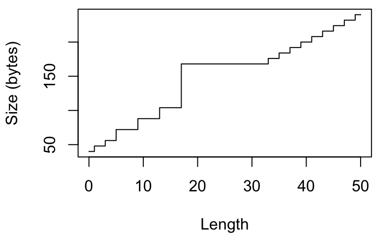
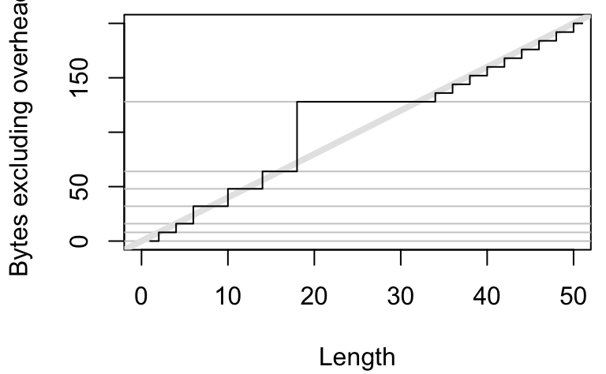
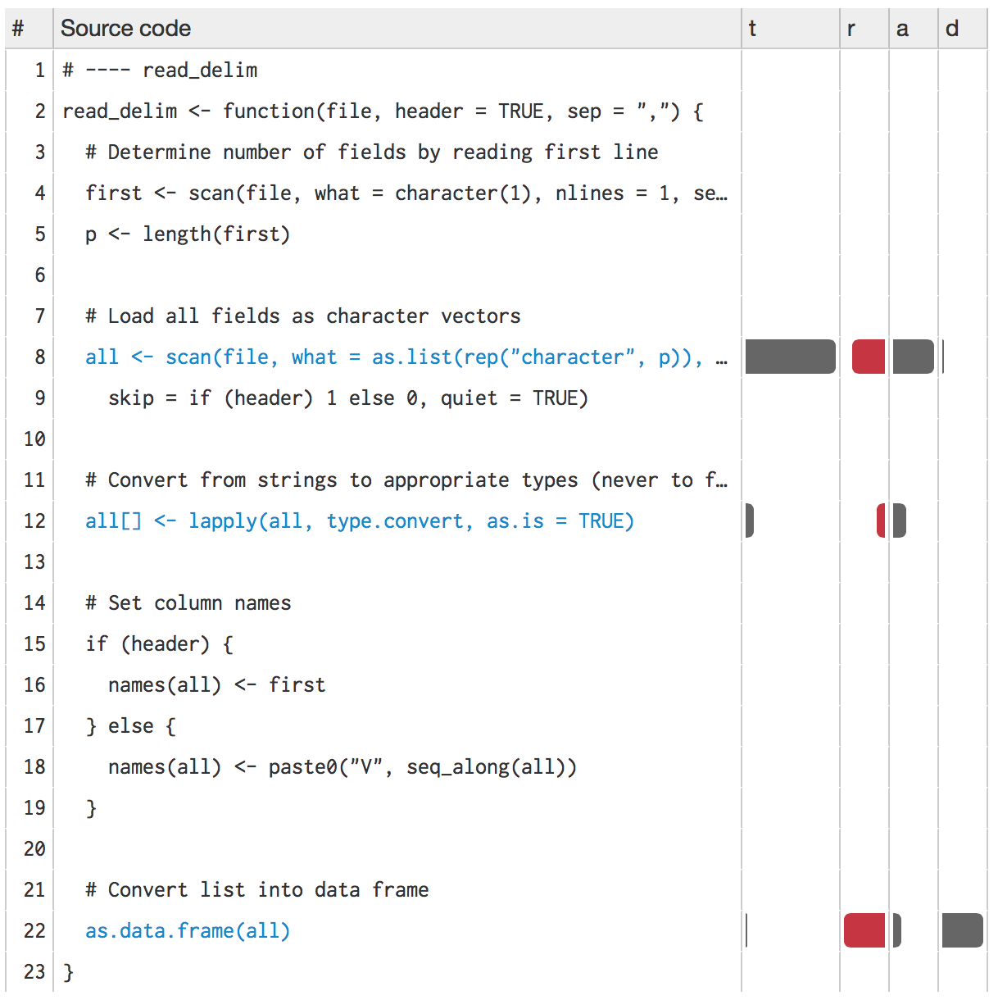

5 Memory
A solid understanding of R’s memory management will help you predict how much memory you’ll need for a given task and help you to make the most of the memory you have. It can even help you write faster code because accidental copies are a major cause of slow code. The goal of this chapter is to help you understand the basics of memory management in R, moving from individual objects to functions to larger blocks of code. Along the way, you’ll learn about some common myths, such as that you need to call gc() to free up memory, or that for loops are always slow.
5.0.0.0.1 Outline
Object size shows you how to use
object_size()to see how much memory an object occupies, and uses that as a launching point to improve your understanding of how R objects are stored in memory.Memory usage and garbage collection introduces you to the
mem_used()andmem_change()functions that will help you understand how R allocates and frees memory.Memory profiling with lineprof shows you how to use the lineprof package to understand how memory is allocated and released in larger code blocks.
Modification in place introduces you to the
address()andrefs()functions so that you can understand when R modifies in place and when R modifies a copy. Understanding when objects are copied is very important for writing efficient R code.
5.0.0.0.2 Prerequisites
In this chapter, we’ll use tools from the pryr and lineprof packages to understand memory usage, and a sample dataset from ggplot2. If you don’t already have them, run this code to get the packages you need:
install.packages("ggplot2")
install.packages("pryr")
install.packages("devtools")
devtools::install_github("hadley/lineprof")5.0.0.0.3 Sources
The details of R’s memory management are not documented in a single place. Most of the information in this chapter was gleaned from a close reading of the documentation (particularly ?Memory and ?gc), the memory profiling section of R-exts, and the SEXPs section of R-ints. The rest I figured out by reading the C source code, performing small experiments, and asking questions on R-devel. Any mistakes are entirely mine.
5.1 Object size
To understand memory usage in R, we will start with pryr::object_size(). This function tells you how many bytes of memory an object occupies:
library(pryr)
object_size(1:10)
#> 88 B
object_size(mean)
#> 1.13 kB
object_size(mtcars)
#> 6.74 kB(This function is better than the built-in object.size() because it accounts for shared elements within an object and includes the size of environments.)
Something interesting occurs if we use object_size() to systematically explore the size of an integer vector. The code below computes and plots the memory usage of integer vectors ranging in length from 0 to 50 elements. You might expect that the size of an empty vector would be zero and that memory usage would grow proportionately with length. Neither of those things are true!
sizes <- sapply(0:50, function(n) object_size(seq_len(n)))
plot(0:50, sizes, xlab = "Length", ylab = "Size (bytes)",
type = "s")
This isn’t just an artefact of integer vectors. Every length 0 vector occupies 40 bytes of memory:
object_size(numeric())
#> 40 B
object_size(logical())
#> 40 B
object_size(raw())
#> 40 B
object_size(list())
#> 40 BThose 40 bytes are used to store four components possessed by every object in R:
Object metadata (4 bytes). These metadata store the base type (e.g. integer) and information used for debugging and memory management.
Two pointers: one to the next object in memory and one to the previous object (2 * 8 bytes). This doubly-linked list makes it easy for internal R code to loop through every object in memory.
A pointer to the attributes (8 bytes).
All vectors have three additional components:
The length of the vector (4 bytes). By using only 4 bytes, you might expect that R could only support vectors up to \(2 ^ {4 \times 8 - 1}\) (\(2 ^ {31}\), about two billion) elements. But in R 3.0.0 and later, you can actually have vectors up to \(2 ^ {52}\) elements. Read R-internals to see how support for long vectors was added without having to change the size of this field.
The “true” length of the vector (4 bytes). This is basically never used, except when the object is the hash table used for an environment. In that case, the true length represents the allocated space, and the length represents the space currently used.
The data (?? bytes). An empty vector has 0 bytes of data. Numeric vectors occupy 8 bytes for every element, integer vectors 4, and complex vectors 16.
If you’re keeping count you’ll notice that this only adds up to 36 bytes. The remaining 4 bytes are used for padding so that each component starts on an 8 byte (= 64-bit) boundary. Most cpu architectures require pointers to be aligned in this way, and even if they don’t require it, accessing non-aligned pointers tends to be rather slow. (If you’re interested, you can read more about it in C structure packing.)
This explains the intercept on the graph. But why does the memory size grow irregularly? To understand why, you need to know a little bit about how R requests memory from the operating system. Requesting memory (with malloc()) is a relatively expensive operation. Having to request memory every time a small vector is created would slow R down considerably. Instead, R asks for a big block of memory and then manages that block itself. This block is called the small vector pool and is used for vectors less than 128 bytes long. For efficiency and simplicity, it only allocates vectors that are 8, 16, 32, 48, 64, or 128 bytes long. If we adjust our previous plot to remove the 40 bytes of overhead, we can see that those values correspond to the jumps in memory use.
plot(0:50, sizes - 40, xlab = "Length",
ylab = "Bytes excluding overhead", type = "n")
abline(h = 0, col = "grey80")
abline(h = c(8, 16, 32, 48, 64, 128), col = "grey80")
abline(a = 0, b = 4, col = "grey90", lwd = 4)
lines(sizes - 40, type = "s")
Beyond 128 bytes, it no longer makes sense for R to manage vectors. After all, allocating big chunks of memory is something that operating systems are very good at. Beyond 128 bytes, R will ask for memory in multiples of 8 bytes. This ensures good alignment.
A subtlety of the size of an object is that components can be shared across multiple objects. For example, look at the following code:
x <- 1:1e6
object_size(x)
#> 4 MB
y <- list(x, x, x)
object_size(y)
#> 4 MBy isn’t three times as big as x because R is smart enough to not copy x three times; instead it just points to the existing x.
It’s misleading to look at the sizes of x and y individually. If you want to know how much space they take up together, you have to supply them to the same object_size() call:
object_size(x, y)
#> 4 MBIn this case, x and y together take up the same amount of space as y alone. This is not always the case. If there are no shared components, as in the following example, then you can add up the sizes of individual components to find out the total size:
x1 <- 1:1e6
y1 <- list(1:1e6, 1:1e6, 1:1e6)
object_size(x1)
#> 4 MB
object_size(y1)
#> 12 MB
object_size(x1, y1)
#> 16 MB
object_size(x1) + object_size(y1) == object_size(x1, y1)
#> [1] TRUEThe same issue also comes up with strings, because R has a global string pool. This means that each unique string is only stored in one place, and therefore character vectors take up less memory than you might expect:
object_size("banana")
#> 96 B
object_size(rep("banana", 10))
#> 216 B5.1.1 Exercises
Repeat the analysis above for numeric, logical, and complex vectors.
If a data frame has one million rows, and three variables (two numeric, and one integer), how much space will it take up? Work it out from theory, then verify your work by creating a data frame and measuring its size.
Compare the sizes of the elements in the following two lists. Each contains basically the same data, but one contains vectors of small strings while the other contains a single long string.
vec <- lapply(0:50, function(i) c("ba", rep("na", i))) str <- lapply(vec, paste0, collapse = "")Which takes up more memory: a factor (
x) or the equivalent character vector (as.character(x))? Why?Explain the difference in size between
1:5andlist(1:5).
5.2 Memory usage and garbage collection
While object_size() tells you the size of a single object, pryr::mem_used() tells you the total size of all objects in memory:
library(pryr)
mem_used()
#> 57.8 MBThis number won’t agree with the amount of memory reported by your operating system for a number of reasons:
It only includes objects created by R, not the R interpreter itself.
Both R and the operating system are lazy: they won’t reclaim memory until it’s actually needed. R might be holding on to memory because the OS hasn’t yet asked for it back.
R counts the memory occupied by objects but there may be gaps due to deleted objects. This problem is known as memory fragmentation.
mem_change() builds on top of mem_used() to tell you how memory changes during code execution. Positive numbers represent an increase in the memory used by R, and negative numbers represent a decrease.
# Need about 4 mb to store 1 million integers
mem_change(x <- 1:1e6)
#> 4 MB
# We get that memory back when we delete it
mem_change(rm(x))
#> -4 MBEven operations that don’t do anything use up a little memory. This is because R is tracking the history of everything you do. You can ignore anything smaller than a couple kB.
mem_change(NULL)
#> -592 B
mem_change(NULL)
#> 656 BIn some languages, you have to explicitly delete unused objects for their memory to be returned. R uses an alternative approach: garbage collection (or GC for short). GC automatically releases memory when an object is no longer used. It does this by tracking how many names point to each object, and when there are no names pointing to an object, it deletes that object.
# Create a big object
mem_change(x <- 1:1e6)
#> 4 MB
# Also point to 1:1e6 from y
mem_change(y <- x)
#> 712 B
# Remove x, no memory freed because y is still pointing to it
mem_change(rm(x))
#> 600 B
# Now nothing points to it and the memory can be freed
mem_change(rm(y))
#> -4 MBDespite what you might have read elsewhere, there’s never any need to call gc() yourself. R will automatically run garbage collection whenever it needs more space; if you want to see when that is, call gcinfo(TRUE). The only reason you might want to call gc() is to ask R to return memory to the operating system. However, even that might not have any effect: older versions of Windows had no way for a program to return memory to the OS.
GC takes care of releasing objects that are no longer used. However, you do need to be aware of possible memory leaks. A memory leak occurs when you keep pointing to an object without realising it. In R, the two main causes of memory leaks are formulas and closures because they both capture the enclosing environment. The following code illustrates the problem. In f1(), 1:1e6 is only referenced inside the function, so when the function completes the memory is returned and the net memory change is 0. f2() and f3() both return objects that capture environments, so that x is not freed when the function completes.
f1 <- function() {
x <- 1:1e6
10
}
mem_change(x <- f1())
#> -688 B
object_size(x)
#> 48 B
f2 <- function() {
x <- 1:1e6
a ~ b
}
mem_change(y <- f2())
#> 4 MB
object_size(y)
#> 4 MB
f3 <- function() {
x <- 1:1e6
function() 10
}
mem_change(z <- f3())
#> 4 MB
object_size(z)
#> 4.01 MB5.3 Memory profiling with lineprof
mem_change() captures the net change in memory when running a block of code. Sometimes, however, we may want to measure incremental change. One way to do this is to use memory profiling to capture usage every few milliseconds. This functionality is provided by utils::Rprof() but it doesn’t provide a very useful display of the results. Instead we’ll use the lineprof package. It is powered by Rprof(), but displays the results in a more informative manner.
To demonstrate lineprof, we’re going to explore a bare-bones implementation of read.delim() with only three arguments:
read_delim <- function(file, header = TRUE, sep = ",") {
# Determine number of fields by reading first line
first <- scan(file, what = character(1), nlines = 1,
sep = sep, quiet = TRUE)
p <- length(first)
# Load all fields as character vectors
all <- scan(file, what = as.list(rep("character", p)),
sep = sep, skip = if (header) 1 else 0, quiet = TRUE)
# Convert from strings to appropriate types (never to factors)
all[] <- lapply(all, type.convert, as.is = TRUE)
# Set column names
if (header) {
names(all) <- first
} else {
names(all) <- paste0("V", seq_along(all))
}
# Convert list into data frame
as.data.frame(all)
}We’ll also create a sample csv file:
library(ggplot2)
write.csv(diamonds, "diamonds.csv", row.names = FALSE)Using lineprof is straightforward. source() the code, apply lineprof() to an expression, then use shine() to view the results. Note that you must use source() to load the code. This is because lineprof uses srcrefs to match up the code and run times. The needed srcrefs are only created when you load code from disk.
library(lineprof)
source("code/read-delim.R")
prof <- lineprof(read_delim("diamonds.csv"))
shine(prof)
shine() will also open a new web page (or if you’re using RStudio, a new pane) that shows your source code annotated with information about memory usage. shine() starts a shiny app which will “block” your R session. To exit, press escape or ctrl + break.
Next to the source code, four columns provide details about the performance of the code:
t, the time (in seconds) spent on that line of code (explained in measuring performance).a, the memory (in megabytes) allocated by that line of code.r, the memory (in megabytes) released by that line of code. While memory allocation is deterministic, memory release is stochastic: it depends on when the GC was run. This means that memory release only tells you that the memory released was no longer needed before this line.d, the number of vector duplications that occurred. A vector duplication occurs when R copies a vector as a result of its copy on modify semantics.
You can hover over any of the bars to get the exact numbers. In this example, looking at the allocations tells us most of the story:
scan()allocates about 2.5 MB of memory, which is very close to the 2.8 MB of space that the file occupies on disk. You wouldn’t expect the two numbers to be identical because R doesn’t need to store the commas and because the global string pool will save some memory.Converting the columns allocates another 0.6 MB of memory. You’d also expect this step to free some memory because we’ve converted string columns into integer and numeric columns (which occupy less space), but we can’t see those releases because GC hasn’t been triggered yet.
Finally, calling
as.data.frame()on a list allocates about 1.6 megabytes of memory and performs over 600 duplications. This is becauseas.data.frame()isn’t terribly efficient and ends up copying the input multiple times. We’ll discuss duplication more in the next section.
There are two downsides to profiling:
read_delim()only takes around half a second, but profiling can, at best, capture memory usage every 1 ms. This means we’ll only get about 500 samples.Since GC is lazy, we can never tell exactly when memory is no longer needed.
You can work around both problems by using torture = TRUE, which forces R to run GC after every allocation (see gctorture() for more details). This helps with both problems because memory is freed as soon as possible, and R runs 10–100x slower. This effectively makes the resolution of the timer greater, so that you can see smaller allocations and exactly when memory is no longer needed.
5.3.1 Exercises
When the input is a list, we can make a more efficient
as.data.frame()by using special knowledge. A data frame is a list with classdata.frameandrow.namesattribute.row.namesis either a character vector or vector of sequential integers, stored in a special format created by.set_row_names(). This leads to an alternativeas.data.frame():to_df <- function(x) { class(x) <- "data.frame" attr(x, "row.names") <- .set_row_names(length(x[[1]])) x }What impact does this function have on
read_delim()? What are the downsides of this function?Line profile the following function with
torture = TRUE. What is surprising? Read the source code ofrm()to figure out what’s going on.f <- function(n = 1e5) { x <- rep(1, n) rm(x) }
5.4 Modification in place
What happens to x in the following code?
x <- 1:10
x[5] <- 10L
x
#> [1] 1 2 3 4 10 6 7 8 9 10There are two possibilities:
R modifies
xin place.R makes a copy of
xto a new location, modifies the copy, and then uses the namexto point to the new location.
It turns out that R can do either depending on the circumstances. In the example above, it will modify in place. But if another variable also points to x, then R will copy it to a new location. To explore what’s going on in greater detail, we use two tools from the pryr package. Given the name of a variable, address() will tell us the variable’s location in memory and refs() will tell us how many names point to that location.
library(pryr)
x <- 1:10
c(address(x), refs(x))
# [1] "0x103100060" "1"
y <- x
c(address(y), refs(y))
# [1] "0x103100060" "2"(Note that if you’re using RStudio, refs() will always return 2: the environment browser makes a reference to every object you create on the command line.)
refs() is only an estimate. It can only distinguish between one and more than one reference (future versions of R might do better). This means that refs() returns 2 in both of the following cases:
x <- 1:5
y <- x
rm(y)
# Should really be 1, because we've deleted y
refs(x)
#> [1] 2
x <- 1:5
y <- x
z <- x
# Should really be 3
refs(x)
#> [1] 2When refs(x) is 1, modification will occur in place. When refs(x) is 2, R will make a copy (this ensures that other pointers to the object remain unaffected). Note that in the following example, y keeps pointing to the same location while x changes.
x <- 1:10
y <- x
c(address(x), address(y))
#> [1] "0x7fd9bf09d7b8" "0x7fd9bf09d7b8"
x[5] <- 6L
c(address(x), address(y))
#> [1] "0x7fd9bc80be20" "0x7fd9bf09d7b8"Another useful function is tracemem(). It prints a message every time the traced object is copied:
x <- 1:10
# Prints the current memory location of the object
tracemem(x)
# [1] "<0x7feeaaa1c6b8>"
x[5] <- 6L
y <- x
# Prints where it has moved from and to
x[5] <- 6L
# tracemem[0x7feeaaa1c6b8 -> 0x7feeaaa1c768]:For interactive use, tracemem() is slightly more useful than refs(), but because it just prints a message, it’s harder to program with. I don’t use it in this book because it interacts poorly with knitr, the tool I use to interleave text and code.
Non-primitive functions that touch the object always increment the ref count. Primitive functions usually don’t. (The reasons are a little complicated, but see the R-devel thread confused about NAMED.)
# Touching the object forces an increment
f <- function(x) x
{x <- 1:10; f(x); refs(x)}
#> [1] 2
# Sum is primitive, so no increment
{x <- 1:10; sum(x); refs(x)}
#> [1] 1
# f() and g() never evaluate x, so refs don't increment
f <- function(x) 10
g <- function(x) substitute(x)
{x <- 1:10; f(x); refs(x)}
#> [1] 1
{x <- 1:10; g(x); refs(x)}
#> [1] 1Generally, provided that the object is not referred to elsewhere, any primitive replacement function will modify in place. This includes [[<-, [<-, @<-, $<-, attr<-, attributes<-, class<-, dim<-, dimnames<-, names<-, and levels<-. To be precise, all non-primitive functions increment refs, but a primitive function may be written in such a way that it doesn’t. The rules are sufficiently complicated that there’s little point in trying to memorise them. Instead, you should approach the problem practically by using refs() and address() to figure out when objects are being copied.
While determining that copies are being made is not hard, preventing such behaviour is. If you find yourself resorting to exotic tricks to avoid copies, it may be time to rewrite your function in C++, as described in Rcpp.
5.4.1 Loops
For loops in R have a reputation for being slow. Often that slowness is because you’re modifying a copy instead of modifying in place. Consider the following code. It subtracts the median from each column of a large data frame:
x <- data.frame(matrix(runif(100 * 1e4), ncol = 100))
medians <- vapply(x, median, numeric(1))
for(i in seq_along(medians)) {
x[, i] <- x[, i] - medians[i]
}You may be surprised to realise that every iteration of the loop copies the data frame. We can see that more clearly by using address() and refs() for a small sample of the loop:
for(i in 1:5) {
x[, i] <- x[, i] - medians[i]
print(c(address(x), refs(x)))
}
#> [1] "0x7fd9ba8d5da0" "2"
#> [1] "0x7fd9ba8d6790" "2"
#> [1] "0x7fd9ba8d7180" "2"
#> [1] "0x7fd9ba8d7b70" "2"
#> [1] "0x7fd9ba8d8560" "2"For each iteration, x is moved to a new location so refs(x) is always 2. This occurs because [<-.data.frame is not a primitive function, so it always increments the refs. We can make the function substantially more efficient by using a list instead of a data frame. Modifying a list uses primitive functions, so the refs are not incremented and all modifications occur in place:
y <- as.list(x)
for(i in 1:5) {
y[[i]] <- y[[i]] - medians[i]
print(c(address(y), refs(y)))
}
#> [1] "0x7fd9b7e24760" "1"
#> [1] "0x7fd9b7e24760" "1"
#> [1] "0x7fd9b7e24760" "1"
#> [1] "0x7fd9b7e24760" "1"
#> [1] "0x7fd9b7e24760" "1"This behaviour was substantially more problematic prior to R 3.1.0, because every copy of the data frame was a deep copy. This made the motivating example take around 5 s, compared to 0.01 s today.
5.4.2 Exercises
The code below makes one duplication. Where does it occur and why? (Hint: look at
refs(y).)y <- as.list(x) for(i in seq_along(medians)) { y[[i]] <- y[[i]] - medians[i] }The implementation of
as.data.frame()in the previous section has one big downside. What is it and how could you avoid it?